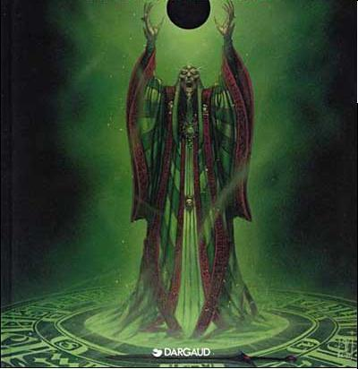

Forums galactiques > Assemblée Galactique : diplomatie officielle > Passage obligé : Présentations
Pages : 1 2 ... 6 7 8 ... 40 41
| Sahred Del'Bashir Respect diplomatique : 45  13/07 ETU 21:10 | Score : 3 Détails Salutation
Moi Sahred Del'Bashir, a été choisi par le conseil des Sages de Parmenion, pour prendre contact avec l'Allience Eternelle. Par cette missive, c'est tout le peuple de Parmenion, qui s'adresse à vous. Ce dernier espère pouvoir bientôt être utile à la grandeur de l'Allience Eternelle, dont les objectfs et interets sont à présent les notres. Gloire à l'Allience Eternelle. | ||
| Koneko Respect diplomatique : 22  13/07 ETU 22:01 | Score : 5 Détails *C'est au milieu d'une assemblée silencieuse, presque ensommeillé, ponctué de petites rixes entre petites gens, qu'apparue la lente procession du peuple des chats. Mené par leur Roi, Koneko, grand guerrier, qui sut réunir son peuple contre l'oppresseur, rallier les races félidés sous une même bannière, et dans le sang, conquérir leur liberté. C'est fier de cet honneur qu'il entama son entrée. Son pelage d'un blanc d'une pureté comparable à certaines étoiles, il envoûtait la salle de son charisme, défiant du regard tout les commandants présent.*
*Il se déplaça ainsi lentement jusqu'a sa place réservée, Sa suite l'accompagnant, Tous vêtu de longues robes de cérémonie, de couleur identique à leur pelage et recouvert de signes tribaux. Les deux premier portant l'emblème du peuple félidé, une tête de chat possédant deux pupille en forme de croissant de lune et de couleur différentes.* *Il s'assit enfin, et sa suite se plaça derrière lui. Deux félines, l'une d'un pelage blanc éclatant, et la seconde d'un noir envoûtant, se pelotonnèrent contre lui.* *Elle commencèrent à ronronner lorsque leur roi prit la parole* Commandants, membres du gouvernement, Je suis heureux de pouvoir enfin être présent physiquement à l'assemblée galactique, Moi, Koneko, Nouveau roi du peuple chat, et membre du conseil du peuple. Vous m'avez peut-être déjà vus sur les écrans de cette assemblée, ou encore encourager notre héros, le Grand baka-neko, vainqueur de son duel contre une bête immonde. Et si ce n'est pas le cas, vous allez pouvoir apprendre à connaître le peuple des Deux lunes. Si la lune blanche ne vous garde pas, la sombre le fera…. *Il s'incline avec un petit sourire aux lèvres, laissant paraître ses canines. puis se rassis, laissant l'assemblée reprendre sa somnolence habituelle* | ||
| Ichimaru Gin Respect diplomatique : 38  14/07 ETU 11:38 | Score : 1 Détails *** Un homme grand et mince, enveloppé dans son kimono blanc, s'approcha de Koneko, son inénarable sourire sur ses lèvres. ***
Roi-Chat, je vous salue bien bas ! Je suis heureux de voir enfin un représentant de cette race magnifique que sont les chats !! Sachez que Moi, Ichimaru Gin, est prêt à nouer avec vous, humbles Chats, une amitié durable et pleine de surprises ... | ||
| Tzewan Todorov Respect diplomatique : 41  19/07 ETU 00:36 | Score : 7 Détails Bonjour à tous
Nous venons de rétablir les communications externes. Je suis le commandeur Tzewan Todorov, chargé d'une mission de colonisation par la Fédération dans le système...... L'état de nos batteries ato...... ne me permet pas...prolonger cette communica........................ ère que je pourr..............tard......................tôt sans doute. Fin d...................... | ||
| dyrun Respect diplomatique : 3  20/07 ETU 16:06 | Score : 2 Détails bonjour a tous
je suis Dyrun un commandants pacifque qui lutte pour la paix.Je suis le roi des hommes vivant sur abidaos. | ||
| diablo Respect diplomatique : 8  21/07 ETU 10:34 | Score : 4 Détails Le seigneur de la terre noire vint, et prononça puissament ces mots:
"Bonjour a tous, je me présente:je suis diablo et je viens en paix.J'aime l'ordre et la diplomatie, c'est pourquoi j'offre mes respects sincères au gouvernement et salue leur travail." *Sur ce, il quitta la salle dans un grondement puissant, suivi par deux de ses acolytes, des diables fanatiques* | ||
| Azazel Respect diplomatique : 20  21/07 ETU 13:17 | Score : 0 Détails ...Azazel: Homme qui conservait les armes de guerre se presenta devant le pupitre et se mis a parler...:
...Je suis ici pour montrer mes qualitées je suis aussi ici pour le respect et la paix comme vous pouvez le pensez je suis pas un horrible monstre avec rien dans le citron... ...Il repartit tranquillement sur sa planete... | ||
| Tzewan Todorov Respect diplomatique : 41 21/07 ETU 15:40 | Score : 2 Détails Bonjour,
Notre système de communications galactique est maintenant à peu près réparé... *l'image holographique se déforme, puis revient en place* ...Nous commençons à nous organiser. La Fédération m'a chargé d'une mission de colonisation pacifique, j'ai donc une double investiture : commandeur militaire et honorat, diplomate si vous préférez, qui est ma fonction principale. Nous tentons actuellement d'établir des relations avec nos plus proches voisins. Nous sommes ouverts à toute forme de coopération. A bientôt. # Honorat - Commandeur Tzewan Todorov / fin de transmission # | ||
| phill3333 Respect diplomatique : 8  21/07 ETU 15:45 | Score : 2 Détails L'amiral phill3333 arriva dans cette grande pièce ou tout les personnes viennent ce présenté aux autres.Lorsque ce fut sont tour, il se leva et commenca sont discour
"Bonjour, Je suis l'amiral phill3333 commandant en chef de la coalition des systèmes libres , cette alliance et pacifiste et recherche de petits commandants indépendants mais qui veulent ce développer, d'ailleur je passe un message à ces petits commandants qui ont peur de l'avenir, rejoiniez moi, et nous seront plus fort ensemble, ne dit on pas que l'union fait la force...Et je suis fier de cette coalition, qui est sensé etre la plus démocratique, et la plus sur qu'il soit.Néanmoins j'ai peur qu'a trop bien faire je ne puis réussire ma tache.Je suis immigrant d'un monde ou seul les plus forts exercés leurs pouvoirs, et les faibles n'étaient que du bétail.Si je suis la aujourd hui devant vous, c'est pour prévenir que je serait la pour evité que les petits commandants soient détruits pas vous, les pseudo dirigeants dictateurs, qui veulent régnés sur la galaxie" Son discourt terminé, il se retourna, et parti rejoindre son vaisseau mére "le pacificateur". | ||
| Cosmic Roger Respect diplomatique : 511  24/07 ETU 01:46  | Score : 4 Détails Cosmic Roger, petit homme et boiteux, entre dans la pièce. Sans préambule, sans un regard pour quiconque, il prend la parole. Une voix assurée et puissante sort de ce corps fragile:
"Salut à toi noble assemblée, je viens pour t'informer de l'émergence d'une nation civilisée sur la planète Syriana. Après des années de lutte entre factions et après les récents évenements ... hum ... métaphysique, mon peuple a enfin pris conscience de l'importance du monde extérieur et de ses évolutions sur nos modestes destinées, nous ne pouvons plus l'ignorer! Je bénéficie donc du mandat de mon peuple pour créer alliances et coalitions afin de faire de notre nation une nation prospère et opulente. Dans cette perspective les relations commerciales et diplomatiques seront préférées à un recours aveugle à la force. Respect et Robustesse à toutes et à tous! | ||
| Yoda Master Respect diplomatique : -62  24/07 ETU 09:49 | Score : -1 Détails ( IMPORTANT: LE PERSONNAGE DE MASTER YODA PARLE COMME YODA donc a l'envers )
Salue ,je vous. Master Yoda ,je suis. Un jedi très recherché.Contre les Siths, je lutte. Mais, le titre de Dirigeant de la Féderation je gère. De la couleur verte mon sabre est. Un padawan, je ne suis donc pas. Si des jedi dans cette galaxie apparaissent, ravi je serai de faire leur connaisance Que la force soit avec vous commandants et commandantes | ||
| Sandalphon Respect diplomatique : 592  24/07 ETU 09:56 | Score : 4 Détails De plus en plus fort, commandants, Yoda Master se plagie lui-même, à présent !...
Non, sérieusement, Yoda Master, cette présentation, vous l'avez déjà faite en page 9, qu'est-ce qui vous arrive ? D'ailleurs que ce soit la même ou non, ça ne rime à rien de faire deux présentations après tant de temps passé... Il serait bon de ne pas voter cette répétition... | ||
| Titan 85 Respect diplomatique : 10  24/07 ETU 12:46 | Score : 10 Détails La salle s'assombrie instantanément après le dernier mot de Sandalphon : un champ holographique apparut en plein millieu de la salle.
Une tête rouge sans corps dont les yeux magenta, l'abus de viande saignante sans doute, regarda l'assemblé avec mépris et hurla : "Je suis Titan, moi et mes légions de Robots allons décimer vos peuples et les persecuter pour qu'un reigne de paix s'installe, car vous apporter mort et souffrance la où vous passer ! Seule ceux qui se soumettent immédiatement pourront esperer survivre a l'apocalypse que je vais déclencher et ...." Soudaint une voie de femme pris le dessu : " Chéri !!!!!! Le repas est près et j'ai préparé tes pantoufles : ceux avec les lapins roses !" | ||
| xeos Respect diplomatique : 335  26/07 ETU 02:00 | Score : 4 Détails Xeos, aujourd hui la divine, apparut pour la "premiere" fois dans la grande salle. Devant tous ces nombreux commandants, elle se dressa fiere et d´une voix venue d´ailleurs leurs teins ce petit discours :
Bonjour à vous commandantes et commandants, Ce jour, nous, Xeos tel le Phoenix reincarné nous présentons à vous. Issue de la Lignée, nous fûmes, sommes et serons. Notre peuple à trouvé terre d´asile dans ce système et sera un ardent défenseur des droits fondammentaux. Nos illustres ancêtres en ont été les plus ardents et en leurs mémoires, nous en reprendrons le flambeau. Notre formation c´est achevée et bien qu´il nous reste beaucoup à apprendre nous nous tenons prête. Sincères salutions à vous noble commandants. Que la sagesse vous guide. Xeos, guerriere mystique. | ||
| Aelina Respect diplomatique : 5  27/07 ETU 15:17 | Score : 5 Détails C'est dans un bruit de coulissement mécanique que les portes de l'Assemblée laissèrent place a un cortège d'une vingtaine gardes en robe pourpre.De ce petit comité se dégagea avec élégance une jeune femme au teint pale et au contraste noir. Elle s'avanca au milieu de l'assemblée , jeta un coup d'oeil aux nombreux commandants qui n'avaient pas encore remarquer son intrusion et parla en ses termes : Commandants , Je vous salue.
Nous , Aelina , Impératrice de Aldébarant VI , sommes venu nous présenté en personne devant l'Assemblée . Nous éspérons une entente cordiale qui nous aporterai bénéfice et grandeur dans vos sytèmes. Pour se faire nous nous engageons a respecté les règles instorées par le grand conseil. *La jeune femme se dirigea vers un fauteil ou des lettres commenceaient a aparaitre , de pourpre et d'or : Aelina Commandant D'Aldébarant VI , Unité de a guilde .* | ||
| bobik Respect diplomatique : -35  27/07 ETU 15:21 | Score : -6 Détails Bonjour je suis entré et j'ai vue quil falait se présanter alors voila je m'appelle bobik et je suis commercant et je ne ve du mal a personne.
| ||
| Ellana Caldin Respect diplomatique : 16  27/07 ETU 16:09 | Score : 9 Détails Une femme de grande taille arriva dans l'assemblée.Elle était vêtu d'une armure légère,d'un grand sabre,et d'une multitude de petite lames fine et mortellement eguisées...Chaque pas qui la rapprocher du pupitre,était comme une danse douce et harmonieuse.
Euh hum 1,2,3, sa marche? On entendit des soupirs agacé dans les tribunes de l'assemblée -Ah oui Bonjour! Je suis Ellana Caldin,du clan de la guilde! Je suis une marchombre Alaviriene et marchande renommé en Gwendalavir. Le Gwendalavir?Vous ne connaissez pas!?(soupir)mais où suis-je tomber? Dans notre monde un art règne en maître,l'art du Dessin! Qu'est ce que le dessin? Le dessin est l'art de dessiné quelque chose dans son esprit et de le faire devenir matériel! regardez! Elanna ferma les yeux,se concentra,et quelques secondes plus tard on vit une flamme jaillir sur ses doigts. Je suis très mauvaise dessinatrice,comme mon compagnon qui m'a envoyer dans ce monde,au lieu de me faire passer de l'autre côté du pont!!! Je le haie! Je ne vais pas vous endormir plus longtemps... Et pensée à développé mon commerce tant que je suis là,pourquoi ne pas faire de bénéfices? ... | ||
| Vallius Oméga Respect diplomatique : 5  27/07 ETU 16:33 | Score : 5 Détails *Un commandant s’avança*
Bonjour à tous, je suis Vallius, ex membre du dernier peuple pirate-ressources. J’interviens ici ce soir pour demander de l’aide. En effet, mon peuple est fatigué de ce voyage galactique et cherche un endroit ou se développer sans contrainte. Pour se faire, je cherche une coalition, aidant les débutants du métier à devenir de vrais commandants. Merci de votre attention, et bonsoir. *Puis il reparti, son flingue sur l’épaule* | ||
| Shino Respect diplomatique : 32  27/07 ETU 17:17 | Score : 4 Détails ~~~~~~~~~~~~~~~~~~~~~~~~~~~~~~~~~~~~~~~~~~~~~~~~~~~~~~~~~~~~~~~~~~~~~~~~~~~~~~~~~~~~~~~~~~~~~~~~~~~~~~~~~~~~~~~~~~~
Sans bruits une commandante aux cheveux roses et vétue d'un enorme chapeau entra dans la salle. Elle avancait doucement et prenait le temps de regarder tout autour d'elle. Elle se mit au milieu de l'assemblée puis commenca a se présenter ~~~~~~~~~~~~~~~~~~~~~~~~~~~~~~~~~~~~~~~~~~~~~~~~~~~~~~~~~~~~~~~~~~~~~~~~~~~~~~~~~~~~~~~~~~~~~~~~~~~~~~~~~~~~~~~~~~~ Bonjour commandants, Je suis la commandante Shino, je viens de The World. Je suis représentante de l'alliance. Heureuse de tous vous rencontrer. J'ai une nature pacifiste. Je ne sais que peu me battre, j'espere que vous ne me tuerez pas trop vite. Mais s'il faut se battre je me battrai, meme si je sais que je sais que je ne gagnerai pas. J'espere que vous m'acceuillerez en tant qu'amie et non pas comme une ennemie. Car je ne le suis pas. Passez une excellente journée, et amusez vous bien. Je repasserai un de ces jours pour vous faire un petit coucou a tous. Au fait, si jamais il y a des blessés de guerre, je suis soigneuse, n'hésitez pas a m'appeler. Je serait toujours disponible pour aider ceux dans le besoin. ~~~~~~~~~~~~~~~~~~~~~~~~~~~~~~~~~~~~~~~~~~~~~~~~~~~~~~~~~~~~~~~~~~~~~~~~~~~~~~~~~~~~ La commandante se retira, doucement, on ne pouvait presque pas entendre ses bruits de pas dans le couloir. ~~~~~~~~~~~~~~~~~~~~~~~~~~~~~~~~~~~~~~~~~~~~~~~~~~~~~~~~~~~~~~~~~~~~~~~~~~~~~~~~~~~~ | ||
| Arius Respect diplomatique : 0 28/07 ETU 01:13 | Score : 0 Détails Bonjour,
je me présente, Commandant Arius. Je me joins à vous après une longue et âpre guerre qui m'a opposé à un commandant fourbe et sans scrupule qui à préféré fuire avant de perdre sa dernière planête. Je cohabite actuellement avec le Commandant BONTEAR, Marchand de haute lignée avec qui j'entretiens d'excellentes relations amicales et de nombreux échanges Dans notre système tout visiteur est la bienvenue et apprécie notre accueil qui parait-il est rare d'après ce qu'ils en disent. Je suis classé 150ème avec un score de 0.42 Voila, j'espère mieux vous connaitre et nous souhaite une longue vie prospère dans ce désert réhabilité... A Bientôt Salutations et Respect Commandant ARIUS |
Pages : 1 2 ... 6 7 8 ... 40 41
Forums galactiques > Assemblée Galactique : diplomatie officielle > Passage obligé : Présentations